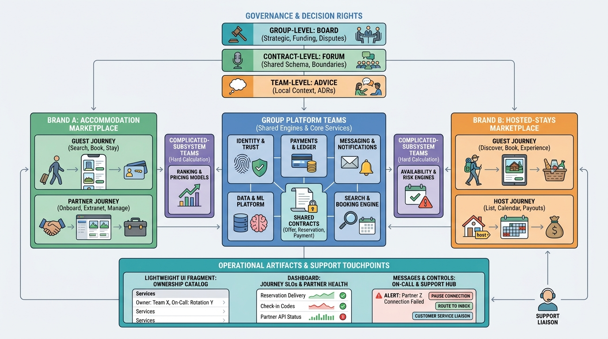

Part IX — LEADERSHIP: The Chief Architect's Agenda
Who Owns What: Organizing Engineering for Stays

Image generated by Google Gemini (gemini-3-pro-image-preview)
Part IX — LEADERSHIP: The Chief Architect's Agenda

Image generated by Google Gemini (gemini-3-pro-image-preview)